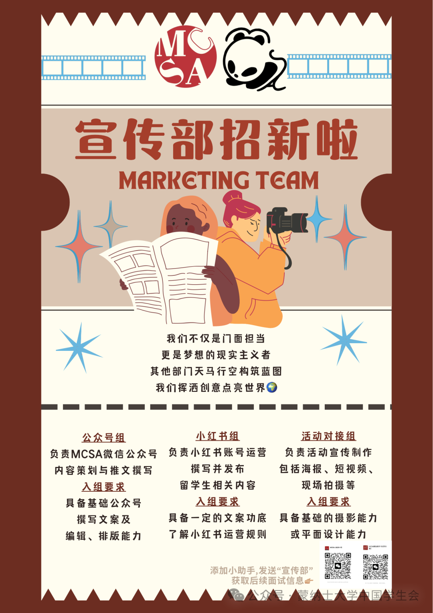
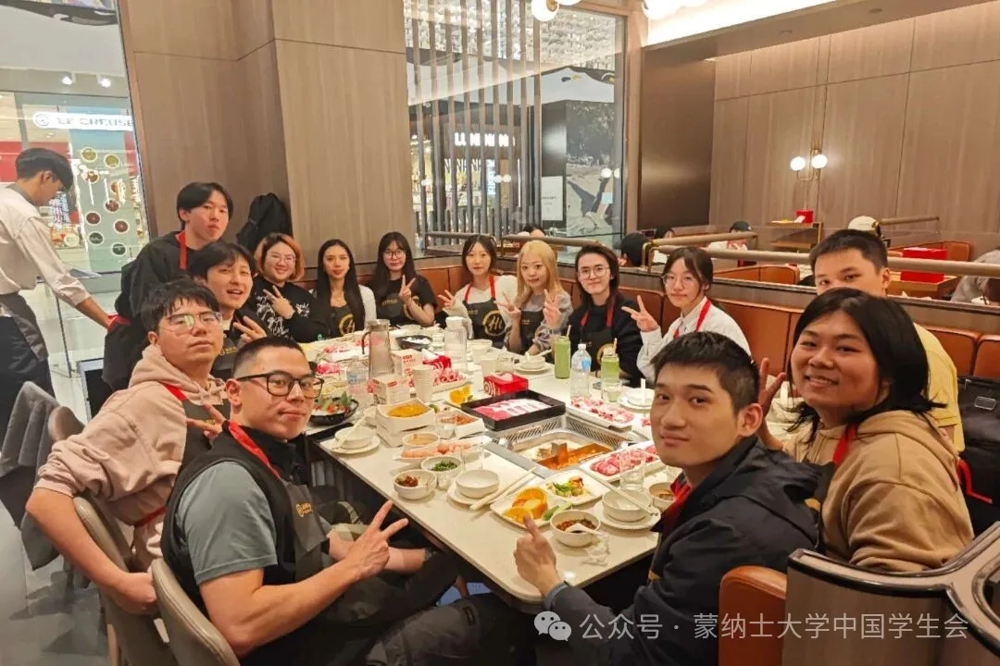
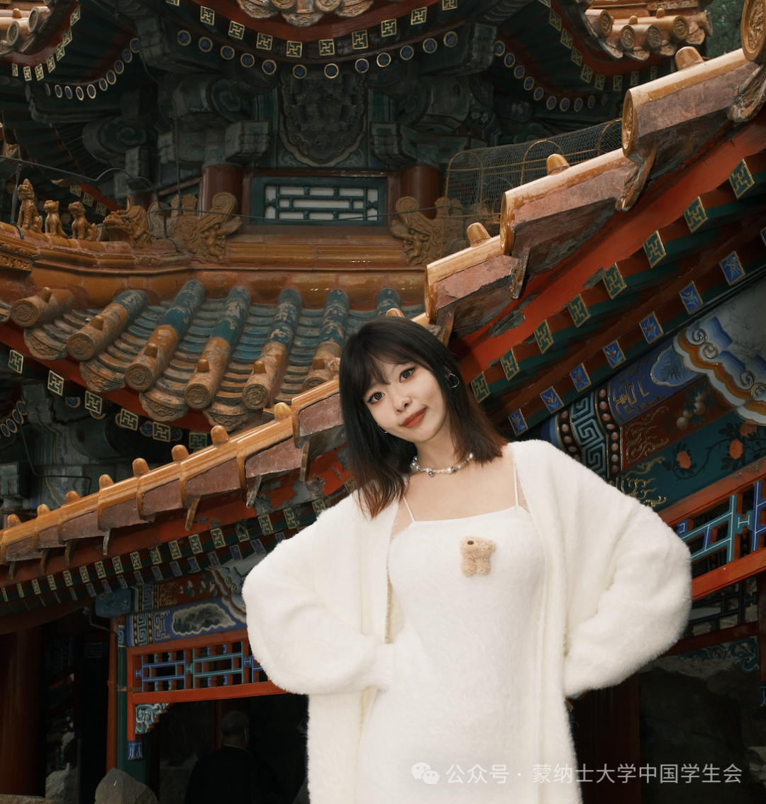
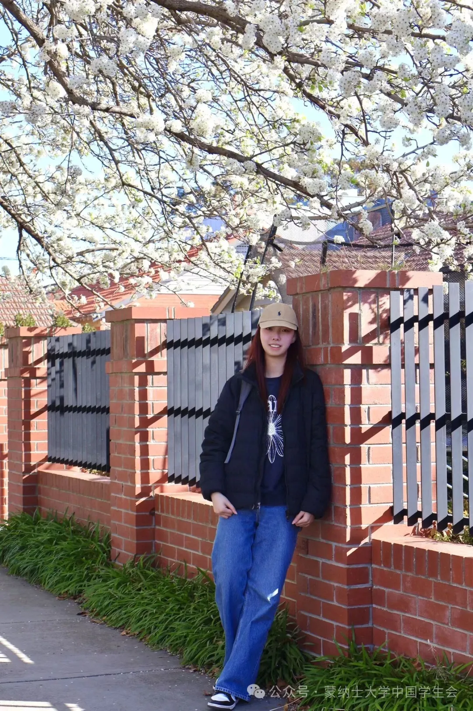
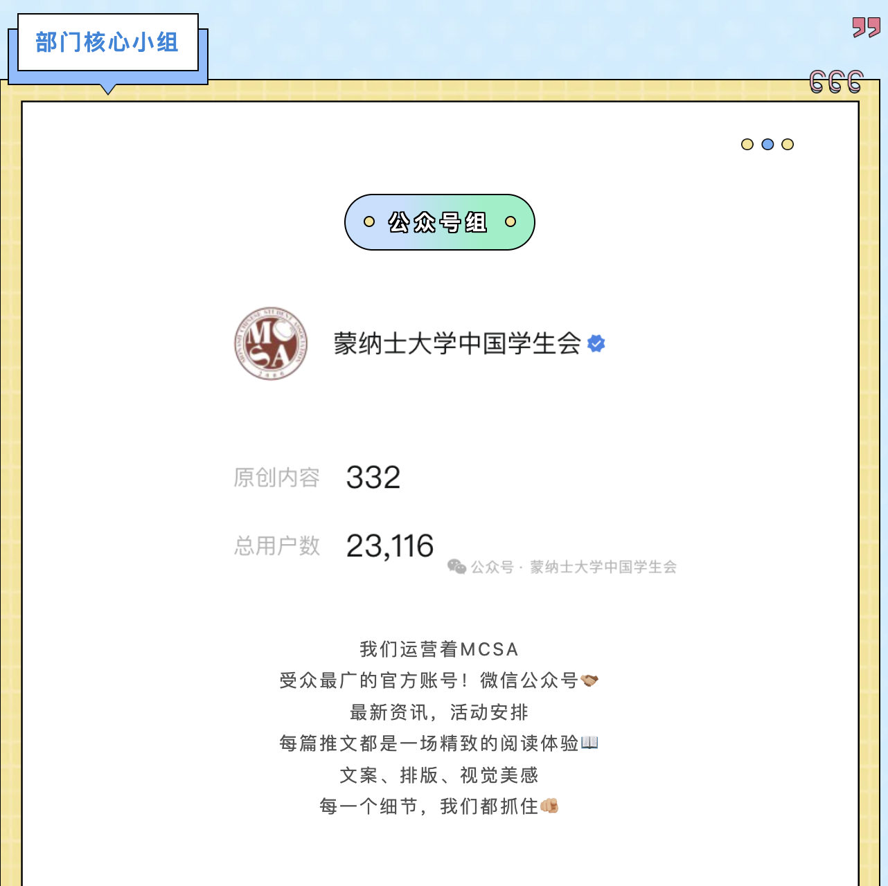
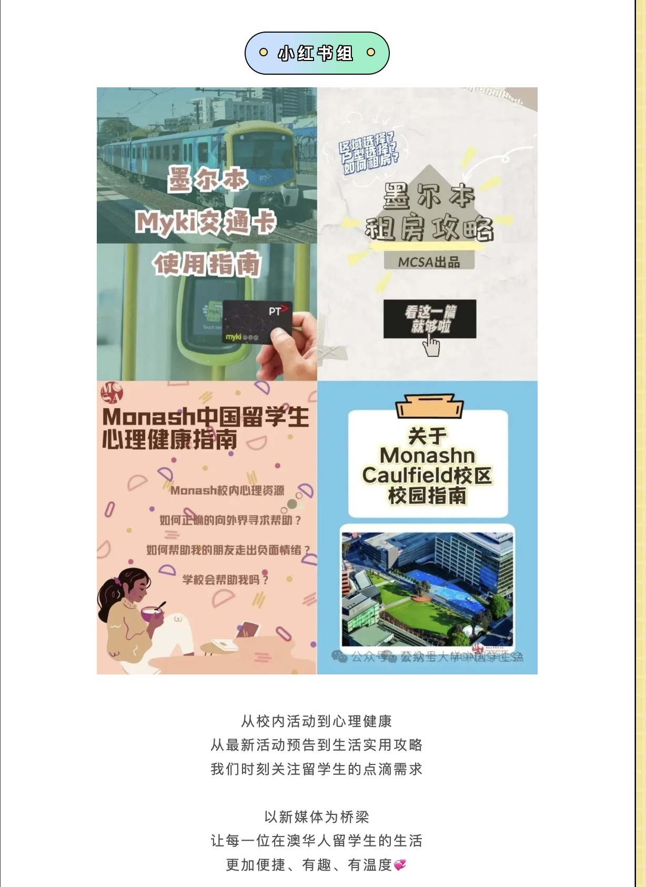
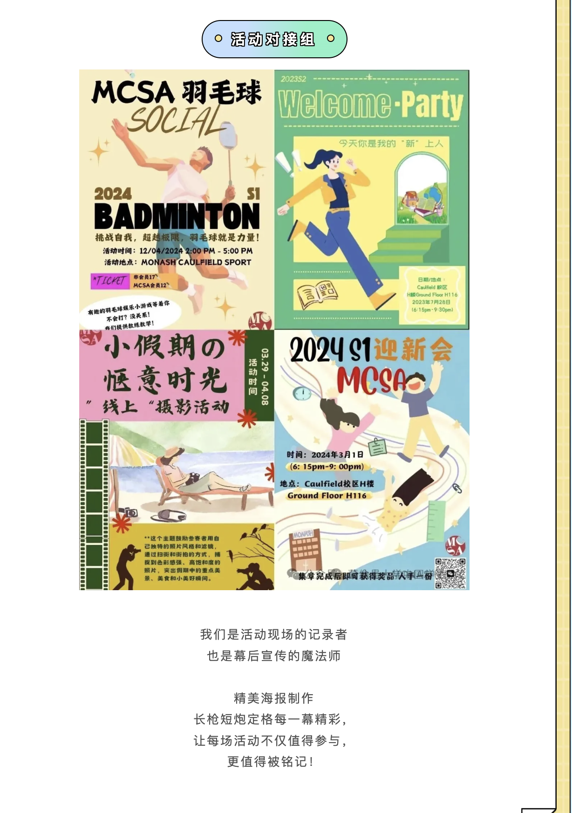
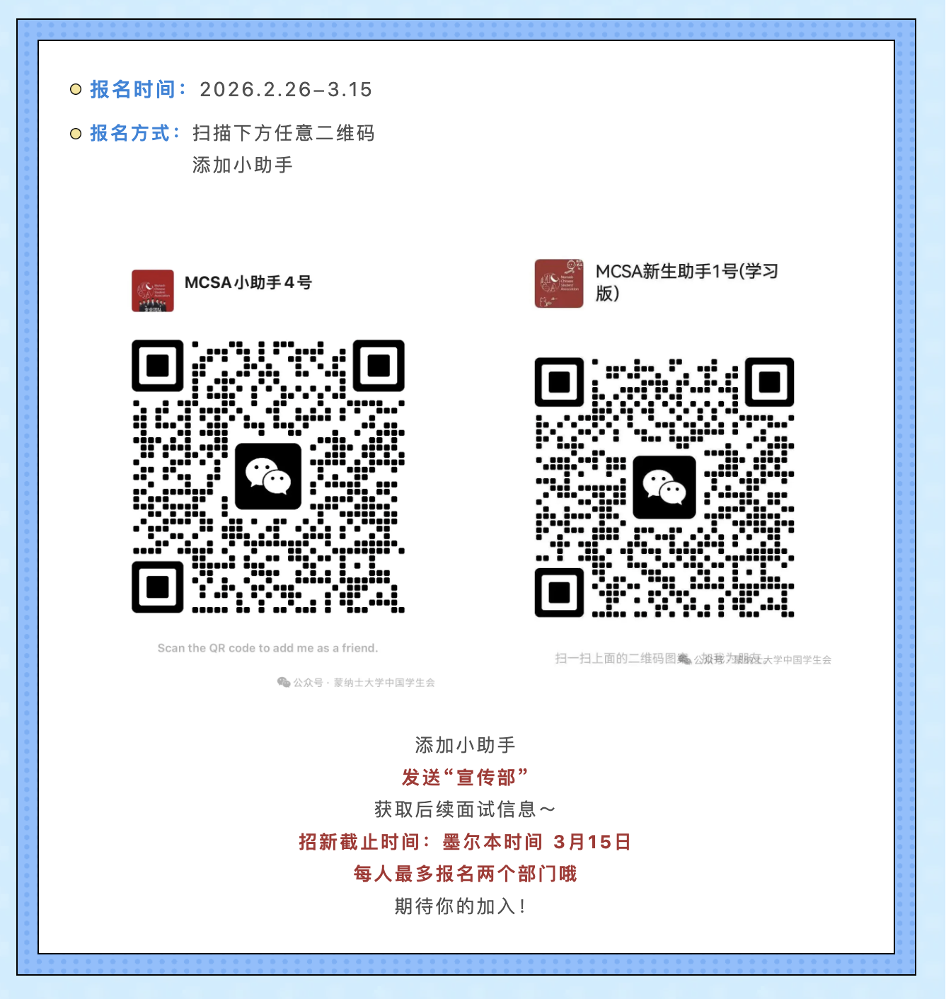

Publicity
Tell stories. Create something new.
Past recruitment round · 26 February–15 March 2026 (Melbourne time). Applications for this round have closed. Follow the official WeChat account for future recruitment.

About us

The Publicity team is the face of MCSA—and a team that turns ideas into reality.
We tell stories through content, push boundaries through creativity and help MCSA reach a wider audience.
If you love creative expression and telling stories through images and words, join the Publicity team and help write MCSA’s next chapter!
Messages from our leaders
Head
Guan Yingchen

With pen and ink, we give our ideas a voice. The Publicity team will bring more original content and fresh reading experiences. Here, you will learn how to plan topics and structure content. We are both storytellers and builders—let’s help our voices reach more people!
Deputy Head · Xiaohongshu
Su Dehui · Erin

Beyond what came before; onward from here.
Deputy Head · Event Liaison
Meng Tianyi · Ella
I’m delighted to meet everyone through the Publicity team. Looking forward to working together this semester 🫶🏻
Leadership records begin with the current team. When the next team takes over, this list will be retained, with terms displayed newest first.
Our core teams
WeChat Official Account team
Giving MCSA a voice through words and design
We manage MCSA’s WeChat Official Account, described in the source article as its widest-reaching official account. From the latest news to event information, we shape each article into an engaging reading experience, paying attention to copy, layout and visual design.
View examples from the source article · WeChat Official Account team
The source screenshot records 332 original posts and 23,116 users at the time of the article; these are not current account figures.

Xiaohongshu team
Connecting with everyday student life
From campus activities and mental wellbeing to event previews and practical guides, we keep international students’ everyday needs in mind.
Through social media, we help make life in Australia more convenient, enjoyable and welcoming for Chinese international students.
View examples from the source article · Xiaohongshu team

Event Liaison team
Capturing every memorable moment
We document events as they happen and create the publicity behind the scenes.
From carefully designed posters to photos and video, we capture the moments that make every event worth attending—and remembering.
View examples from the source article · Event Liaison team

Roles and requirements
WeChat Official Account team
Responsibilities
- Plan content and write articles for the MCSA WeChat Official Account.
- Edit and lay out articles to make them visually appealing and engaging.
- Create content around topical issues and international students’ interests.
Requirements
- Beginners are welcome!
- Strong writing, clear thinking and creativity, with the ability to choose topics independently and bring information together.
- Basic WeChat editing and layout skills using tools such as Xiumi or 135 Editor.
- An understanding of social media operations; relevant experience is a plus.
Xiaohongshu team
Responsibilities
- Write and publish student guides, event previews and related content.
- Plan relevant topics around Chinese international students’ needs, improve readership and engagement, and respond to trends to expand MCSA’s reach.
Requirements
- Beginners are welcome!
- Writing skills that produce clear, lively and engaging posts.
- Understanding of Xiaohongshu operations and trends; skills in increasing visibility are a plus.
Event Liaison team
Responsibilities
- Produce visual publicity materials, including posters, short videos and on-site photography.
- Document MCSA events with high-quality photos and videos, then edit the results.
- Participate in event planning and work with other departments to maximise publicity impact.
Requirements
- Beginners are welcome!
- Basic photography or videography skills; camera experience is a plus.
- Basic skills in video editing software such as CapCut or design tools such as Canva.
- Careful, responsible and collaborative, with the ability to manage busy periods during events.
What you can gain
Build practical skills
Develop skills in topic planning, content structure, copywriting, layout and basic data analysis. Build experience for your CV and future work.
Monthly member recognition
Each month, the department votes for an outstanding member, who receives a tangible reward.
Team get-togethers OvO
Regular team gatherings and social events help members get to know one another. Participation is voluntary.
Past application instructions
Past recruitment round · 26 February–15 March 2026 (Melbourne time). Applications for this round have closed. Follow the official WeChat account for future recruitment.
Original application period: 26 February–15 March 2026. Scan either QR code to add an MCSA assistant, then send “宣传部” for interview information. Deadline: 15 March, Melbourne time. Each person could apply to at most two departments. These QR codes are from a past recruitment round and do not indicate that applications are currently open.
View the past application notice (with QR codes)
